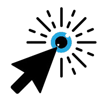

InterAACtionGaze est un logiciel simple d’utilisation et accessible. Il permet de calibrer le regard pour le movement de la souris en compensant le décalage entre là où l’utilisateur regarde et là où il veut regarder.
Calibrage du regard
-

InterAACtionGaze